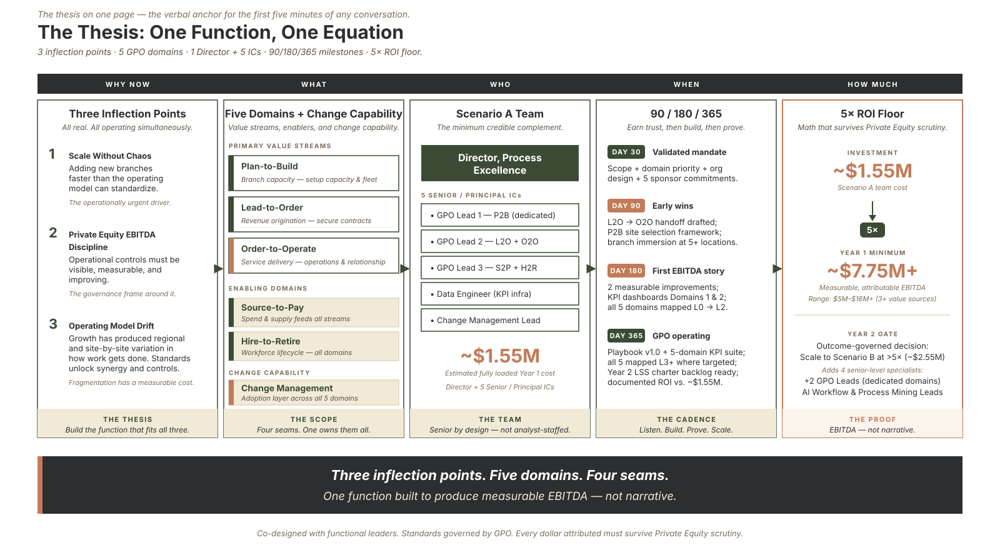
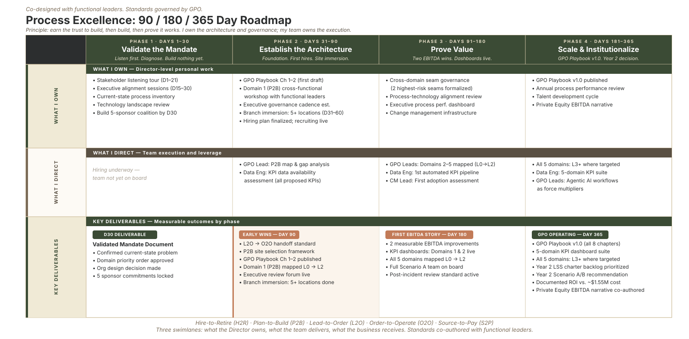

Flagship of the "How Would You Build It?" series · by Jeffrey Benson
Here is a question I find clarifying, the kind I'd happily lose an afternoon to:
How would you build a zero-to-one Process Excellence and Global Process Ownership function inside a high-growth, private-equity-backed company, and provide leadership across five end-to-end process domains: Plan-to-Build, Lead-to-Order, Order-to-Operate, Source-to-Pay, and Hire-to-Retire?
No existing team. No playbook. No standards to inherit. A board that expects the function to pay for itself in hard dollars. Five sprawling value chains that each cut across every department in the company. And a leadership team that is, understandably, already at capacity running the business that exists today.
It's a deliberately ambiguous ask. That's exactly what makes it worth answering well. The quality of your answer to this question tells a hiring committee, or a sponsor, or a board, far more than any list of certifications. So let me show you how I think through it: not the polished conclusion, but the reasoning underneath.

The Global Process Ownership (GPO) Thesis: Domain governance, core phases, and value-creation targets.
Context
A company to make this concrete
Abstractions are easy to nod along to and impossible to act on. So I'll borrow a composite company and carry it through the whole series.
Meet Meridian Field Services, a PE-backed platform rolling up regional commercial mechanical-services firms (the companies that install and maintain the HVAC and mechanical systems inside large buildings). Meridian buys three or four companies a year, stands up new branches, and is trying to operate them as one company instead of a dozen that happen to share a logo.
Meridian has all five domains, and they're real:
- Plan-to-Build: opening new branches and building service capacity
- Lead-to-Order: originating and closing commercial service contracts
- Order-to-Operate: delivering the work and servicing the relationship for its life
- Source-to-Pay: buying equipment, parts, and subcontracted labor at scale
- Hire-to-Retire: recruiting, certifying, and retaining a skilled-technician workforce
Meridian is fictional. The pattern is not. If you've ever worked inside a company growing faster than its operating model can standardize, you already feel the friction Meridian is feeling: handoffs that drop, the same problem solved five different ways in five locations, a number on the board's dashboard that nobody fully trusts.
The instinct, when you're handed this mandate, is to walk in on Day 1 with a finished framework and start executing it. That instinct is the single most common way this role fails. A plan you deploy before you've listened is, almost by definition, the right answer to the wrong question.
So here is the spine of how I'd actually approach it: earn the trust to build → build → prove it works. Three movements delivered in that order is non-negotiable.
Diagnosis
First: diagnose the real mandate before you design anything
Before I draw a single process map, I owe myself an honest answer to one question: what problem is this company actually hiring this function to solve? The answer governs everything downstream: what you build first, who you hire, how hard you push.
At Meridian, the surface answer is "standardize our processes." But underneath, there are usually two or three forces operating at once: a scaling problem (the operating model is being stress-tested faster than it can adapt), a financial-discipline problem (the sponsor needs operational performance that is visible, measurable, and improving), and an organizational-moment problem (new leadership wants to put its own fingerprint on how the company runs). Which of those is most urgent changes your entire sequencing.
The discipline I bring here is to treat my own plan as a set of hypotheses to be validated, not facts to be executed. Every assumption gets written down and labeled by confidence. Is this function greenfield, or are there informal process owners I haven't met yet? Does the company want true enterprise standardization, or does it value local autonomy more than it admits? Which of the five domains is genuinely on fire? Then I spend the first thirty days listening, one-on-one with the leaders who own the work, to confirm or kill each assumption before I commit resources to it.
This is the unglamorous part, and it's the part that earns the right to everything that follows. (Part 1 of this series goes deep here.)
Architecture
Second: architect the function around standards, not headcount
A Global Process Owner is one of the most misunderstood roles in a company, so let me be precise about what it is, and what it isn't.
A GPO does not own the people, the budget, or the execution of a domain. The branch managers, the sales leaders, the procurement team: they keep owning the work. What the GPO owns is the standards, the handoffs, and the performance measures that govern how work flows through the domain end to end. Process ownership is not the same as operational ownership. I own the architecture; the functional leaders own the execution. The moment that line blurs, the function gets resented and routed around.
To build that architecture, I decompose each domain the way I've described in my How to See the Forest and the Trees series, from the whole value chain (L0) down through its major activities (L1) and into the sub-processes where work actually happens (L2 -> L3 -> Lx). The domains aren't departments on an org chart; they're value chains that cut sideways across the whole company. (Part 2.)
And here is the idea I care about most, the one most process functions underweight:
Plenty of value leaks inside the boxes, through waste, defects, and rework. But the value no one is even looking for leaks at the seams between them.
Within a domain, the work is usually done by people who are good at it, and its inefficiencies are at least visible to someone. The failures that hide are at the handoffs: where Lead-to-Order makes a commercial promise that Order-to-Operate then has to deliver against, where Source-to-Pay's procurement timing becomes Plan-to-Build's schedule risk, where Hire-to-Retire's technician pipeline either does or doesn't match the ramp of new contracts. Nobody owns those seams, so they're where customers experience the gap as a broken promise. Governing the seams is the fastest first win; draining the waste inside each process is the deeper work that follows. (Part 3, the heart of the series.)
Doctrine
Third: build a function that earns pull, not compliance
You can design the most elegant process architecture in the world and watch the organization quietly ignore it. Adoption, not documentation, is the binding constraint. So three principles govern how the function behaves, and they matter more than any deliverable:
1. Service before standards. The function operates as a service organization first. Leaders pull us in when our help is real and fast; they route around us when our value is theoretical. Response measured in days, not weeks. No standard is published for a process we haven't walked through with the people doing the work.
2. Co-design, then sign. Any standard that touches operational work is co-designed with the people accountable for it, validated on-site, and signed by them before it's published. We standardize up: we learn from the branches doing it best and elevate that as the model, rather than averaging everyone down to a template.
3. Respect the boundaries. We define what a process needs. The functional partners own how their systems and people deliver it. Where the lane is ambiguous, we defer. Lane discipline beats scope expansion every time.
If that sounds less like a standards police force and more like a trusted partner, that's the point. It's the same posture I've written about in my work on servant leadership. And when the standards do need to land as behavior change, the framework I reach for is ADKAR. (Parts 4 and 5.)
Scale
"So how big would you build it?"
Whenever I'm asked this in the room, my answer is the same: start lean and senior, prove value, and scale only when the data justifies it.
For Meridian in Year 1, I'd want a small, senior team: a handful of principal-level specialists who can each operate as a force multiplier across hundreds of people in the functional organizations, rather than a large team of junior analysts producing volume without leverage. Process-excellence leads who lead cross-functional teams; one specialist who builds the data infrastructure behind the measures; one who owns adoption and change. Senior by necessity, small by design.
And I'd put a number on myself before anyone asked. The function must return at least five times its fully loaded cost in measurable, attributable improvement. If it doesn't, we revise it; if it still doesn't pay, we wind it down. I want that bar in the room because it disciplines my own choices about where to point the team. A value-creation function that can't earn its keep shouldn't survive, and saying so is how you earn a sponsor's trust. (Part 6.)
That bar isn't bravado. I've held my own work to the same test for years; in one six-year stretch, the data and process infrastructure I built returned many times what it cost to put in place, comfortably past the floor I'm describing. I set the bar where I'm confident, not where I hope.
Tooling
The operator's instinct: build the instrument
There's one more thing I'd bring to Meridian that I think separates this approach from a slide deck.
When I model a domain (the decomposition, the seams, the KPIs at every step), I don't want it living in a static Visio file that's wrong the day after it's drawn. I want it instrumented: a structured model where every handoff is a traceable connection, every activity carries its own measures, and the before-and-after story for the board generates itself instead of being assembled by hand the night before the review.
That's why, alongside the writing, I'm building the tool that mechanizes exactly this method. (Working name: Forester, still in active development.) The articles teach the thinking; the instrument makes it scalable. It's the difference between an operator who describes the function and one who can actually run it. I'll point to it where it's relevant as the series goes on.
Roadmap
Where this goes next
This flagship is the map. The six parts that follow are the territory:
1. Validate the Mandate: diagnosing the real problem before designing the solution
2. What a Global Process Owner Actually Owns: standards, not headcount
3. The Seams Are Where Value Leaks: governing the handoffs between domains
4. Building the Team: senior, lean, and AI-native by design
5. The Playbook: Service Before Standards, on why process functions get routed around, and how not to
6. Earn Your Keep in EBITDA: committing to a number, and the discipline behind it

Process Excellence Program: 90 / 180 / 365 Day implementation and execution roadmap.
If you're carrying a version of this ambiguity right now (a company growing faster than its operating model, handoffs that keep dropping, a number on the dashboard you don't fully trust), I'd genuinely like to hear where the friction is sharpest for you. That's usually where the most valuable conversation starts.
Next in the series: Part 1: Validate the Mandate.
Sources: Independent research on Process Excellence and Global Process Ownership (GPO) framework deployments. Practical applications of standard work, organizational design, and continuous improvement metrics in high-growth rollups.